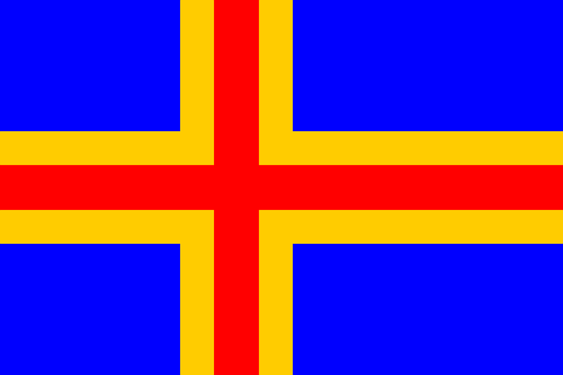

Perustietoja Islannista
Islanti on saarivaltio Atlantin valtameren pohjoisosassa, välittömästi pohjoisen napapiirin eteläpuolella. Islanti on pinta-alaltaan noin kolmasosan Suomesta ja väkiluvultaan ja asukastiheydeltään selvästi pienin Pohjoismaa (pinta-alaltaan 103 000 Km²).
Maan pääkaupunki on Reykjavík, jossa asuu noin kolmannes Islannin väestöstä. Se on maailman pohjoisin itsenäisen valtion pääkaupunki.
Islannin maantiede
Saarella on aktiivista vulkaanista toimintaa: geysireitä, kuumia lähteitä ja toistuvia tulivuorenpurkauksia. Luonto on karu ja omaleimainen. Islannissa on myös paljon jäätiköitä, ja noin 11,5 prosenttia maan pinta-alasta onkin jään peitossa.
Islannin viisi suurinta kaupunkia ovat:
- Reykjavík, 121 822 asukasta
- Kópavogur, 33 181 asukasta
- Hafnarfjörður, 27 870 asukasta
- Akureyri, 17 915 822 asukasta
- Garðabær, 11 885 asukasta
Väkiluku ja Bruttokansantuote
| Vuosi | Väkiluku |
|---|---|
| 1980 | 226 948 |
| 1990 | 253 758 |
| 2000 | 279 049 |
| 2010 | 317 630 |
| Vuosi | BKT |
|---|---|
| 1980 | 3.33 miljardia |
| 1990 | 6.37 miljardia |
| 2000 | 8.92 miljardia |
| 2010 | 13.31 miljardia |